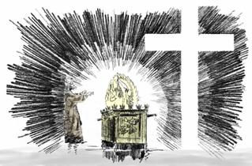

Proclaiming the Good News of the forgiveness of sin
and eternal life for all repentant sinners
by God's unmerited grace through faith
in the sinless life and atoning death
of the Lord Jesus Christ on the cross of Calvary.
". . . .sin is transgression of the Law"
"if we confess our sins, He is faithful and just to forgive us our sins and cleanse us from all unrighteousness."
" whosoever shall call upon the name of the Lord shall be saved."
"repent and be converted that your sins may be blotted out"
Publishing Editor
Bill Diehl Jr
Jeannine Blazzard Diehl
Jesus Christ is Lord!!!
".....I will not be negligent to remind you always of these things,
though you know and are established in the Present Truth." 2 Peter 1:12"Just so, I tell you, there will be more joy in heaven over one sinner who repents!!!" Luke 15:7
Read read some of the email comments we receive.
What do evangelical Christians believe?? To print click here
The Sabbath restoration movement is a "restoration" of bible truth rather than an "innovation" of strange new things which our Lord and His apostles never taught. Just look at the true essence of the gospel message that is being proclaimed to every nation, kindred, tongue, and people:
1.) We affirm and proclaim the everlasting gospel of the vicarious atonement of our Lord Jesus Christ on the cross of Calvary.John 3:14-18 14 And as Moses lifted up the serpent in the wilderness, even so must the Son of man be lifted up: 15 That whosoever believeth in him should not perish, but have eternal life. 16 For God so loved the world, that he gave his only begotten Son, that whosoever believeth in him should not perish, but have everlasting life. 17 For God sent not his Son into the world to condemn the world; but that the world through him might be saved. 18 He that believeth on him is not condemned: but he that believeth not is condemned already, because he hath not believed in the name of the only begotten Son of God. 19 And this is the condemnation, that light is come into the world, and men loved darkness rather than light, because their deeds were evil. 20 For every one that doeth evil hateth the light, neither cometh to the light, lest his deeds should be reproved. 21 But he that doeth truth cometh to the light, that his deeds may be made manifest, that they are wrought in God.
Our Lord Jesus Christ is the promised "Seed of the Woman" (Genesis 3:15) who has fulfilled all the righteous legal and moral demands of God's Law for us so that in Him all repentant sinners who put their faith in His blood are accounted sinless and righteous in His merciful reckoning even unto the coming of the Lord. From the beginning of life in Christ to the end of life in Christ, the repentant believer in Christ will always confess that he needs the covering of Christ's forgiveness and imputed righteousness.
The Holy Spirit indwells all believers in Christ to empower them and help them to begin to walk in obedience to God's holy Law in sanctified holy living. But the sanctified life of even the most godly of God's people will still need to be covered by the active righteousness (His sinless life) and passive righteousness (His atoning death on the cross of Calvary) of Christ's imputed or "reckoned" righteousness even unto the Last Day when Christ comes again. Thus we affirm and proclaim the message of "repentance towards God and faith in the Lord Jesus Christ". This message is a warning and a witness that God is about to destroy all the unbelieving world and that all who refuse to repent, believe the gospel of Christ, and allow Christ to begin to write His Law upon their hearts through the indwelling Holy Spirit will be lost eternally.
2.) We affirm and proclaim the apostolic teaching that the "hour of God's judgment" has come. All the world is being called out of the kingdom of Satan, called spiritual "Babylon", and being invited to receive the seal of God's justification, forgiveness, and eternal life through faith in the atoning blood of Christ. Those repentant believers who receive the "seal of God" are filled with the Holy Spirit and will acknowledge the Law of God, the Ten Commandments, including the Sabbath of the fourth commandment, as their moral guide in sanctified holy living. The message of the "Three Angels of Revelation 14" is the same message that the apostolic church proclaimed. The Protestant reformation and the Sabbath restoration movement have been raised up in the providence of God to restore this apostolic "judgment hour" message that our Lord Jesus Christ as our High Priest has entered the most holy place of the heavenly sanctuary as the one Mediator between God and Man to plead the merits of His blood for all repentant sinners who put their faith in Him. This saving message is the same message as the early church's apostolic call to repentance towards God and faith in the atoning blood of Jesus Christ. The gift of God is the forgiveness of sin and eternal life by God's unmerited grace alone for all who believe.
3.) We affirm and proclaim what the Protestant reformers called the First, Second, and Third Use of God's holy Law.
The "First Use of the Law" is to define proper social norms
as a restraint upon lawlessness and crime in society at large.The bible also affirms and proclaims that the Holy Spirit employs the "Second Use of the Law" as a "schoolmaster" to continually define what "sin" is. It convicts us of our sinful nature and our need to repent and call upon the name of Christ for forgiveness. We are continually drawn to Christ by the Holy Spirit to be forgiven and justified by faith in His sinless life and atoning death on Calvary. Daily the believing repenting Christian will need forgiveness and the imputed righteousness of Christ in justification until the Last Day. The believing Christian also will daily need the imparted enabling grace of the Holy Spirit as he grows in sanctification throughout his earthly life:
a.) at the first day of conversion of a sinner to Christ,
b.) during the entire Christian sojourn in this world,
c.) and even unto the coming of the Lord in the clouds of heaven.This side of eternity, the believing people of God will alsways pray in repentance towards God and ask for the forgiveness of sin. We will always need the imputed righteousness of Christ and justification by faith in the sinless life and atoning blood of Christ.
The bible also affirms and proclaims the "Third Use of the Law" as a moral guide for the Christian believer which is so important in this lawless diabolical age in which we live. The Holy Spirit in the new covenant promise begins to write the holy Law of God upon the hearts of all repentant believers who are born again through faith in Christ's blood. This impartation of the gift of the indwelling Holy Spirit is called "sanctification" and it is an ongoing growth in Christ throughout our earthly sojourn. The true gospel of Christ rejects any lawless teaching which denies the Ten Commandments or any part thereof.
4.) We affirm and proclaim that God truly calls and invites all the world to come to Christ in repentance towards God and faith in Christ as Savior and Lord. He graciously offers forgiveness of sin and the free gift of eternal life to every nation, kindred, tongue and people. God has not predetermined or predestined who will be saved or lost. Christ's sinless life and atoning blood can cover any repentant sinner who calls upon His name. Hyper-Calvinism, Double Predestination, the Augustinian teaching of "limited" atonement and "irresistible" grace for a predetermined elected number of people are rejected as unscriptural. The Holy Spirit attends the proclamation of the gospel and invites all to come to Christ, but His call to repentance and His invitation to salvation are resistible.
5.) We affirm and proclaim the glorious truth of the resurrection of the dead at the Second Coming of Christ as the blessed hope of the believer. The Grecian view of an "immortal soul" which lives on eternally after death is unscriptural. All attempts to contact the dead are forbidden as Satanic and unscriptural.
6.) We affirm and proclaim the virgin birth of our Lord Jesus Christ and His unique incarnation as fully God and fully man. God the Father, God the Son, and God the Holy Spirit are revealed to us in God's word as the three eternal persons of the Godhead. The Lord Jesus Christ is the One through whom God has created, sustained, and redeemed the world. Arianism and Semi-Arianism are rejected as being false heretical views on the nature of Christ.
7.) We affirm and proclaim the harmony yet distinction of the Law and the Gospel. This harmony yet distinction is a necessary bulwark against the prevailing error of antinomian Dispensationalism which is sweeping through the evangelical Christian world today and foolishly focusing on the Zionist events in the middle east, a rebuilding of the Levitical temple, and a "secrete rapture" of the church. Darbyism is rejected as unscriptural.
8.) We affirm and proclaim the seventh day Sabbath of the fourth commandment of the Decalogue as a memorial to Christ's having created the universe approximately 6,000 years ago in six literal days. The Sabbath is God's emphatic "No!!" to the abomination of Darwinian evolutionism. Sunday sacredness is rejected as unscriptural.
9.) We affirm and proclaim the Biblical truth of the literal fall of Adam and Eve in the Garden of Eden as the origin of sin and suffering and death. This truth is denied by all forms of Darwinism including so-called "theistic" evolution and "progressive creationism".
10.) We affirm and proclaim the existence of a real fallen angel named Lucifer who became Satan along with one third of the angelic host. Satan tempted Eve to believe that she was immortal and that she could ignore the divine warning against eating the forbidden fruit of the tree of knowledge of good and evil. Adam joined Eve in her sin and rebellion and thus they were cast out of Eden. Sin and suffering and death thus came upon the world and the entire human family. However the Lord's plan of forgiveness, redemption and salvation through the promised Seed of the woman was revealed to them and to all the world through repentance towards God and faith in the atoning blood of the Savior, Jesus Christ.
Just before the very end of the world, Satan, the deceiver, himself will be permitted to visibly appear and deceptively announce and claim to all the world that he is the true creator, savior, and god of the world. Just as he deceived Eve in the garden of Eden, he will claim that humanity is naturally immortal and that the "immortal soul" of man can never die. Also as the "Lawless One" he will claim that he alone has the authority to determine what is good and what is evil. He will claim to have changed the seventh day Sabbath of the fourth commandment of the holy Law of God. He will demand that all the world must bow down to him and worship him by recognizing Sunday, the first day of the week, as the day to honor him as the creator and savior of the world. In this final world-wide crisis and testing time, this over-powering deception if possible would deceive even God's elect. At this time, in spite of world-wide persecution and threat of death, those bible-believing Christians who keep the true Ten Commandments of God and who trust in the atoning blood of Christ will not be deceived by Satan's end-time lies and deceptions.
11.) We affirm and proclaim a literal world-wide flood approximately 4,000 years ago which destroyed the lawless unbelieving antediluvian world and the saving of Noah and his family by God's unmerited grace. The "local flood" teaching is rejected as unscriptural.
12.) We affirm and proclaim that God will punish and then totally and eternally annihilate sin, Satan, and all unrepentant sinners at the end of the millennium at the final executive judgment rather than punish sinners in an eternally burning hell-fire in unending pain and suffering throughout eternity. Eternally burning hell-fire and unending suffering of the lost is rejected as unscriptural.
13.) We as true children of the Reformation affirm and proclaim that the papacy is the anti-Christ beast of Revelation 13 and that the truth of the gospel is an ongoing rebuke to the abominable errors of Roman Catholicism — the intercession of the saints and Mary, transubstantiation, purgatory, priestly absolution of sin, infant baptism, eternal suffering of the lost in hell-fire, Sunday sacredness, the immortality of the soul, and most importantly the error of justification because of the infused righteousness of the Holy Spirit within the believer rather than justification because of the imputed righteousness of Christ's meritorious sinless life and atoning death on the cross reckoned to the believer.
14.) We affirm and proclaim the non-immortality of the soul and thus is a rebuke to modern day Spiritualism which seeks to contact and communicate with the dead. The bible teaches that death is a "sleep" until the resurrection of the body.
15.) We affirm and proclaim adult baptism by immersion for all repentant sinners who put their faith in the atoning death of Christ on the cross. Infant baptism by sprinkling is rejected as unbiblical sacramentalism.
16. We affirm and proclaim that in the Old Testament "Day of Atonement" ceremony the goat chosen to be "sacrificed for the Lord" which was slain and whose blood was carried into the Most Holy Place of the Levitical temple foreshadowed and symbolically represented the Lord Jesus Christ and His shed blood on Calvary. His shed blood "vicariously" or substitutionally atones for the guilt and sins of God's people. The second goat called the scapegoat or Azazel goat which was not sacrificed in the ritual, but rather is led out into the wilderness to die, symbolically represents the punishment and destruction of Satan and all the unbelieving world. They atone for their own sins by being punished and destroyed outside of the New Jerusalem after the 1000 years are fulfilled.
17.) We affirm and proclaim that at the second coming of the Lord, He will raise from the dead all those who have called upon His name since the Fall of Adam. At the coming of the Lord, He will not touch down upon the earth, but rather the believing saints who are alive at His coming will be "caught up" together with the resurrected saints to meet the Lord in the air. The unbelievers who are alive at His coming will be destroyed by the brightness of His coming. Satan and his fallen angels will then be bound to the desolated earth for 1,000 years. During this time Christ and the saved in heaven will determine the punishment to be meted out to Satan and each of the fallen angels, and also to those unbelievers throughout history who refused to repent and call upon the name of the Lord. At the end of the 1,000 years of the Millennium, Christ and the redeemed will descent in the New Jerusalem down to the desolated earth. All of the lost throughout the ages will then be raised from the dead. Satan will deceive them again into believing that they can attack and defeat those who are within the walls of the New Jerusalem. But as they approach the holy city, fire will rain down upon them from heaven. They will all then be punished according to the measure of their lawless deeds during their lifetime and then finally be consumed. Satan himself along with his demons will be totally destroyed and annihilated forever. The earth will then be recreated in Edenic beauty as it was before the fall of Adam and the entrance of sin and death.
18.) We affirm and proclaim that all of the natural-born children of Adam inherit a fallen sinful nature with inherited propensities to sin and selfishness. This sinful moral and legal inheritance from Adam is called Original Sin. Christ's human nature which was conceived by the Holy Spirit and born of the virgin Mary did not inherit this fallen sinful human nature and propensity to sin. He was tempted in all points as are we, yet He was without sin or any inclination to sin.
Christ's deity and divine nature as the Son of God who has always existed from all eternity, with no beginning or end, was incarnated in the person of the man, Jesus Christ. Only Christ's human nature was conceived by the Holy Spirit in the virgin Mary. The incarnate Christ was and is and will always be fully God and fully man.
19.) We affirm and proclaim that the bread and wine of the Lord's Supper are symbolic of the body and blood of our Lord. The bread and wine are a remembrance of the Lord's sinless life and atoning death on the cross and proclaim the gospel of the forgiveness of sin until He comes again. Transubstantiation and Consubstantiation are rejected as unscriptural.
20.) And finally we affirm and proclaim that the Bible alone is the final authority in all matters of doctrine and faith.
What Does the Everlasting Gospel Affirm?
...and also Deny?
The Present Truth Magazine Confession of Faith1. The Gospel of Jesus Christ—
We believe that the Gospel is the good news that the Lord Jesus Christ has suffered and died for the sins of the world!The Proclamation of the Gospel to All the World: Because of His unmerited grace and infinite love for the fallen sons and daughters of Adam, God Himself in the person of our Lord Jesus Christ has come into this sin-darkened world, lived a sinless, spotless life by perfectly obeying and fulfilling the Law of God, and then He suffered and died for our sins, in our place, as our atoning sacrifice upon the cross of Calvary. As the Second Adam, our Lord took upon Himself the legal guilt, punishment, penalty, suffering and death which we all deserve. The curses pronounced at the Fall of the First Adam, fell in full measure upon the Second Adam, the Lord Jesus Christ. In Christ, God has provided a sin bearer, substitute, and redeemer for the entire human family. He alone as the divine Son of God could have offered to the holy Law of God a righteousness equal to its broadest demands for perfect righteousness.
1.) Active obedience — The Law of God requires perfect obedience to all of its holy commandments, and absolute holiness and sinlessness of life. This perfect righteousness Jesus performed for us as the sinless Second Adam.
2.) Passive obedience — The Law of God also requires punishment and death for all who sin and come short of its righteous demands. This legal penalty Jesus bore for us when He suffered and died for us, in our place at Calvary. The guilt of all the world was reckoned and imputed to Him while He hung upon the cross.
The finished work of Jesus Christ on the cross is the meritorious cause (or the legal basis) of acceptance with God: In Christ's sinless life and atoning death on the cross of Calvary, God has by His unmerited grace provided a divine legal substitute, legal representative, and Second Adam for every fallen child of Adam. Christ was reckoned and treated as a sinner in the eyes of Divine justice so that by God's unmerited grace alone, in Christ alone, salvation from the penalty of sin has been made available for all the world. In Christ God has provided a ransom for all of humanity by paying the legal debt of all. The Lord Jesus Christ lived a sinless life, suffered and died as an atoning sacrifice for the sins of the world, arose again from the dead, and ascended into Heaven where He ever lives as the one High Priest and mediator who intercedes in the most holy place of the heavenly sanctuary to save all repentant sinners who call upon His name for forgiveness and eternal life.
The Invitation of the Gospel to All the World: We believe that God's offer of forgiveness and eternal life through faith in Christ's shed blood on Calvary is proclaimed to all the world and is attended by the outpouring power of the Holy Spirit in "prevenient" enabling grace (or "preceding" enabling grace). It is God's will that all should come unto a saving knowledge of Christ to receive the forgiveness of sin and eternal life. Thus the Holy Spirit, through the proclamation of the everlasting Gospel, calls and enables whosoever will to personally respond and believe the Gospel of Christ's finished work of atonement on the cross of Calvary, to repent of their sins, and to be baptized for the remission of sins.
Repentance towards God and faith in the Lord Jesus Christ are the "instrumental" cause of personal salvation. The Holy Spirit is the "Instrumental" agent to bring lost sinners to personal reconciliation with God. The Holy Spirit brings conviction of sin and guilt and judgment to all the world. The Holy Spirit attends the proclamation of the Good News of the forgiveness of sin and eternal life through faith in the sinless life and atoning death of the Lord Jesus Christ. The Spirit enables and invites whosoever will to call upon the name of Christ and personally come to repentance towards God and faith in Jesus Christ. All who respond to Christ's invitation through the drawing power of the Holy Spirit's enabling grace are forgiven of sin and saved from the penalty of sin. The forgiven justified believers in Christ will hear and obey the Spirit's call to commit their lives to Christ as their Lord and Savior. They are justified freely by God's unmerited grace alone through faith in the sinless life and atoning death of the Lord Jesus Christ alone. They are justified, forgiven, declared righteous and innocent, accepted, pardoned, perfected, saved, elected, set free from condemnation, reconciled, accounted righteous, chosen, adopted, purged, delivered from death and made alive, atoned for, found, brought back, bought back, made nigh, and predestined unto life eternal in Christ. By the unmerited grace of God they are accounted perfect and sinless in His merciful reckoning; and their sinfulness and guilt are covered by His sinlessness. The Law of God finds nothing to condemn in the repentant sinner who believes and continues to believe in Jesus as his personal Savior and Lord. The repentant sinner who believes in Christ is forgiven and acquitted of all guilt and is reckoned as sinless through the imputed righteousness of Christ and his name is recorded in the Book of Life. He is reckoned as righteous in Christ and accounted worthy of eternal life. This is what the apostle Paul calls justification by faith in Christ (Righteousness by Faith). Christ ever lives to make intercession for believers as the one and only mediator between God and Man. On the Last Day He will come again to give eternal life to all who eagerly await His return.
Thus, we as repentant sinners are personally saved from the penalty for our sins when we call upon Jesus and believe in the atoning death of Christ on the cross of Calvary. No repentant believer in the Lord Jesus Christ can ever be lost so long as we continue to trust only in the sinless life and atoning death of the Lord Jesus Christ unto the end of our lives or until Jesus comes in the clouds of heaven on the Last Day. There will never be a point in our lives where we will not need to be legally justified by God's unmerited grace alone through faith in the imputed righteousness of our Lord Jesus Christ. Any repentant believer in Christ who afterwards falls away from repentance towards God and faith in Christ as his Savior and Lord will lose his hope of eternal life unless he repents of his high-handed willful sins and returns to faith.
All saving merit is in the person of the Lord Jesus Christ. Faith is never the meritorious cause of salvation. In other words, there is no merit in faith, but rather all righteousness and merit are in the object of our faith, the sinless Lamb of God, the one Mediator between God and Man, Jesus Christ.
Unlimited Atonement and Resistible Grace: It is not God's will that any should perish, but those who resist the call of the Holy Spirit's enabling grace, refuse to repent of their sins, and will not believe the gospel of their salvation in Christ are blaspheming against the Holy Spirit and are calling God a liar. Unrepentant sinners will have to bear the full penalty for their own sins and stand alone without a sinless Mediator on the final Judgment Day.
(click here to see the other affirmations and denials of the Christian faith)
What Happens When a Christian Dies?
by Bill Diehl, Jr.
(printable link here) (See also Dr. Bullinger's article "Lazarus and the Rich Man")The Tree of Life Those who falsely teach that all men are immortal by nature because humans supposedly have an "immortal soul" or "immortal spirit" which can never die are merely echoing the lie of the Deceiver in the Garden of Eden, "Ye shall NOT surely die". We are told in the word of God that God only has immortality.
1Timothy 6:15 ...who is the blessed and only Potentate, the King of kings, and Lord of lords 16 who only hath immortality, dwelling in light unapproachable; whom no man hath seen, nor can see: to whom be honor and power eternal.
The saints will have immortality at His coming when "this mortal shall put on immortality" BUT only because we will again have access to the tree of life by God's unmerited grace alone.
1 Corinthians 15:51-57 51 Behold, I show you a mystery; We shall not all sleep, but we shall all be changed, 52 In a moment, in the twinkling of an eye, at the last trump: for the trumpet shall sound, and the dead shall be raised incorruptible, and we shall be changed. 53 For this corruptible must put on incorruption, and this mortal must put on immortality. 54 So when this corruptible shall have put on incorruption, and this mortal shall have put on immortality, then shall be brought to pass the saying that is written, Death is swallowed up in victory. 55 O death, where is thy sting? O grave, where is thy victory? 56 The sting of death is sin; and the strength of sin is the law. 57 But thanks be to God, which gives us the victory through our Lord Jesus Christ.
Revelation 2:7 "He that hath an ear, let him hear what the Spirit saith unto the churches; To him that overcomes will I give to eat of the tree of life, which is in the midst of the paradise of God."
God barred the human family from the tree of life after the Fall. As Genesis 3:22-24 tells us:
"And the LORD God said, Behold, the man is become as one of us, to know good and evil: and now, lest he put forth his hand, and take also of the tree of life, and eat, and live for ever: Therefore the LORD God sent him forth from the garden of Eden, to till the ground from whence he was taken. So he drove out the man; and he placed at the east of the garden of Eden Cherubims, and a flaming sword which turned every way, to keep the way of the tree of life."
2 Timothy 1:10 But is now made manifest by the appearing of our Saviour Jesus Christ, who hath abolished death, and hath brought life and immortality to light through the gospel:
Read the following quote from Genesis 5:5-20, 25-31. From the meaning of the words high-lighted in red. Do you think that the Lord might be trying to tell us something about what happened to the human family when, as a result of the Fall, it was denied access to the tree of life???
"And all the days that Adam lived were nine hundred and thirty years: and he died. And Seth lived an hundred and five years, and begat Enos: And Seth lived after he begat Enos eight hundred and seven years, and begat sons and daughters: And all the days of Seth were nine hundred and twelve years: and he died. And Enos lived ninety years, and begat Cainan: And Enos lived after he begat Cainan eight hundred and fifteen years, and begat sons and daughters: And all the days of Enos were nine hundred and five years: and he died. And Cainan lived seventy years, and begat Mahalaleel: And Cainan lived after he begat Mahalaleel eight hundred and forty years, and begat sons and daughters: And all the days of Cainan were nine hundred and ten years: and he died. And Mahalaleel lived sixty and five years, and begat Jared: And Mahalaleel lived after he begat Jared eight hundred and thirty years, and begat sons and daughters: And all the days of Mahalaleel were eight hundred ninety and five years: and he died. And Jared lived an hundred sixty and two years, and he begat Enoch: And Jared lived after he begat Enoch eight hundred years, and begat sons and daughters: And all the days of Jared were nine hundred sixty and two years: and he died." "And Methuselah lived an hundred eighty and seven years, and begat Lamech: And Methuselah lived after he begat Lamech seven hundred eighty and two years, and begat sons and daughters: And all the days of Methuselah were nine hundred sixty and nine years: and he died. And Lamech lived an hundred eighty and two years, and begat a son: And he called his name Noah, saying, This same shall comfort us concerning our work and toil of our hands, because of the ground which the LORD hath cursed. And Lamech lived after he begat Noah five hundred ninety and five years, and begat sons and daughters: And all the days of Lamech were seven hundred seventy and seven years: and he died."
Now let's look at the New Testament The young man our Lord raised from the dead in Luke 7 was not called back to this world from a conscious spirit existence in heaven. If this young man had died and gone to the glory of heaven why would it be a blessing to come back to life in this sin-darkened old world?? The fact is that he was raised from the sleep of death, not from a glorious existence in heaven as a "spirit":
Luke 7:12-15 "Now when he came nigh to the gate of the city, behold, there was a dead man carried out, the only son of his mother, and she was a widow: and much people of the city was with her. And when the Lord saw her, he had compassion on her, and said unto her, Weep not. And he came and touched the bier: and they that bare him stood still. And he said, 'Young man, I say unto thee, Arise.' And he that was dead sat up, and began to speak. And he delivered him to his mother."
In a similar account, the young maiden in the gospels who was asleep in death was not called back from a spirit existence in heaven to once again live on this earth. It was the "breath of life" which returned to her body, not a conscious immortal "spirit" or "ghost". While those ignorant of the hope of the resurrection stood about mourning her death, our Lord went to her dead body and took her by the hand and awakened her from her sleep to live again. For the believer, death is merely a sleep from which our Lord shall awaken us:
Luke 8:52 And all were weeping, and bewailing her: but he said, Weep not; for she is not dead, but sleepeth. 53 And they laughed him to scorn, knowing that she was dead. 54 But he, taking her by the hand, called, saying, Maiden, arise. 55 And her spirit (pneuma - breath) returned, and she rose up immediately: and he commanded that something be given her to eat. 56 And her parents were amazed: but he charged them to tell no man what had been done.
Matthew 9:18-19, 23-26 "While he spoke these things unto them, behold, there came a certain ruler, and worshipped him, saying, 'My daughter is even now dead: but come and lay thy hand upon her, and she shall live.' And Jesus arose, and followed him, and so did his disciples. And when Jesus came into the ruler's house, and saw the minstrels and the people making a noise, He said unto them, Give place: for the maid is not dead, but sleeps. And they laughed him to scorn. But when the people were put forth, he went in, and took her by the hand, and the maid arose. And the fame hereof went abroad into all that land."
Now let's look at how Paul viewed death. When did he teach that believers shall become immortal? At the moment of death? or at the moment of the second coming of Christ on the Last Day? Notice his counsel to the Corinthian church and how he views death, immortality, and the resurrection on the Last Day. There is not even a hint that Paul looked to go to heaven as a bodiless "spirit". Paul's hope is for the resurrection at the Last Day as the reward of the believer in Christ!!
1 Thessalonians 4:13 But I would not have you to be ignorant, brethren, concerning them which are asleep, that ye sorrow not, even as others which have no hope. 14 For if we believe that Jesus died and rose again, even so them also which sleep in Jesus will God bring with him. 15 For this we say unto you by the word of the Lord, that we which are alive and remain unto the coming of the Lord shall not prevent (precede) them which are asleep. 16 For the Lord himself shall descend from heaven with a shout, with the voice of the archangel, and with the trump of God: and the dead in Christ shall rise first: 17 Then we which are alive and remain shall be caught up together with them (the resurrected believers) in the clouds, to meet the Lord in the air: and so shall we ever be with the Lord. 18 Wherefore comfort one another with these words.
1 Corinthian 15:12 Now if Christ be preached that he rose from the dead, how say some among you that there is no resurrection of the dead? 13 But if there be no resurrection of the dead, then is Christ not risen: 14 And if Christ be not risen, then is our preaching vain, and your faith is also vain. 15 Yea, and we are found false witnesses of God; because we have testified of God that he raised up Christ: whom he raised not up, if so be that the dead rise not. 16 For if the dead rise not, then is not Christ raised: 17 And if Christ be not raised, your faith is vain; ye are yet in your sins. 18 Then they also which are fallen asleep in Christ are perished.... 19 If in this life only we have hope in Christ, we are of all men most miserable. 20 But now is Christ risen from the dead, and become the first fruits of them that slept. 21 For since by man came death, by man came also the resurrection of the dead. 22 For as in Adam all die, even so in Christ shall all be made alive. 23 But every man in his own order: Christ the first fruits; afterward they that are Christ's at his coming. 24 Then cometh the end, when he shall have delivered up the kingdom to God, even the Father; when he shall have put down all rule and all authority and power. 25 For he must reign, till he hath put all enemies under his feet. 26 The last enemy that shall be destroyed is death. 27 For he hath put all things under his feet. But when he saith all things are put under him, it is manifest that he is excepted, which did put all things under him. 28 And when all things shall be subdued unto him, then shall the Son also himself be subject unto him that put all things under him, that God may be all in all. 29 Else what shall they do which are baptized for (Greek:huper — concerning, dealing with, referring to) the dead, if the dead rise not at all? why are they then baptized for (Greek:huper — concerning, dealing with, referring to) the dead?
In verse 29, Paul is saying that those baptized Christians who have died in the faith would have no hope if the dead rise not. Their hope is in the resurrection, not in a conscious "spirit" existence apart from the body!!!
30 And why stand we in jeopardy every hour? 31 I protest by your rejoicing which I have in Christ Jesus our Lord, I die daily. 32 If after the manner of men I have fought with beasts at Ephesus, what advantageth it me, if the dead rise not? let us eat and drink; for tomorrow we die. 33 Be not deceived: evil communications corrupt good manners. 34 Awake to righteousness, and sin not; for some have not the knowledge of God: I speak this to your shame. 35 But some man will say, How are the dead raised up? and with what body do they come? 36 Thou fool, that which thou sowest is not quickened (made alive), except it die: 37 And that which thou sowest, thou sowest not that body that shall be, but bare grain, it may chance of wheat, or of some other grain: 38 But God giveth it a body as it hath pleased him, and to every seed his own body. 39 All flesh is not the same flesh: but there is one kind of flesh of men, another flesh of beasts, another of fishes, and another of birds. 40 There are also celestial bodies, and bodies terrestrial: but the glory of the celestial is one, and the glory of the terrestrial is another. 41 There is one glory of the sun, and another glory of the moon, and another glory of the stars: for one star differeth from another star in glory. 42 So also is the resurrection of the dead. It (the body: see verse 35) is sown in corruption; it is raised in incorruption: 43 It is sown in dishonour; it is raised in glory: it is sown in weakness; it is raised in power: 44 It is sown a natural body; it is raised a spiritual body. There is a natural body, and there is a spiritual body. 45 And so it is written, The first man Adam was made a living soul; the last Adam was made a quickening (life-giving) spirit. 46 Howbeit that was not first which is spiritual, but that which is natural; and afterward that which is spiritual. 47 The first man is of the earth, earthy: the second man is the Lord from heaven. 48 As is the earthy, such are they also that are earthy: and as is the heavenly, such are they also that are heavenly. 49 And as we have borne the image of the earthy, we shall also bear the image of the heavenly 50 Now this I say, brethren, that flesh and blood cannot inherit the kingdom of God; neither doth corruption inherit incorruption.
When does the Christian receive the glorified spiritual body? At the resurrection!! Notice that Paul does not say that we will be "spirits" in heaven. He says that we will have a spiritual or heavenly body just as our Lord had a glorified heavenly body after his ascension into heaven to sit on His Father's throne. Paul is NOT even suggesting that we will be merely spirits.
1 Corinthians 15:51 "Behold, I show you a mystery; We shall not all sleep, but we shall all be changed, in a moment, in the twinkling of an eye, at the last trump: for the trumpet shall sound, and the dead shall be raised incorruptible, and we shall be changed. For this corruptible must put on incorruption, and this mortal must put on immortality. So when this corruptible shall have put on incorruption, and this mortal shall have put on immortality, then shall be brought to pass the saying that is written, Death is swallowed up in victory. O death, where is thy sting? O grave, where is thy victory? The sting of death is sin; and the strength of sin is the law. But thanks be to God, which giveth us the victory through our Lord Jesus Christ." 1 Corinthians 15:21 "For since by man came death, by man came also the resurrection of the dead. For as in Adam all die, even so in Christ shall all be made alive. But every man in his own order: Christ the first fruits; afterward they that are Christ's at his coming."
2 Corinthians 4:14ff "Knowing that he which raised up the Lord Jesus shall raise up us also by Jesus, and shall present us with you. 15 For all things are for your sakes, that the abundant grace might through the thanksgiving of many redound to the glory of God. 16 For which cause we faint not; but though our outward man perish, yet the inward man is renewed day by day. 17 For our light affliction, which is but for a moment, worketh for us a far more exceeding and eternal weight of glory; 18 While we look not at the things which are seen, but at the things which are not seen: for the things which are seen are temporal; but the things which are not seen are eternal. 5:1 For we know that if our earthly house of this tabernacle were dissolved, we have a building of God, an house not made with hands, eternal in the heavens. 2 For in this (body) we groan, earnestly desiring to be clothed upon with our house which is from heaven: 3 If so be that being clothed we shall not be found naked. 4 For we that are in this tabernacle do groan, being burdened: not for that we would be unclothed, but clothed upon, that mortality might be swallowed up of life . 5 Now he that hath wrought us for the selfsame thing is God, who also hath given unto us the earnest (down payment) of the Spirit. 6 Therefore we are always confident, knowing that, whilst we are at home in the body, we are absent from the Lord: 7 (For we walk by faith, not by sight:) 8 We are confident, I say, and willing rather to be absent from the body, and to be present with the Lord. 9 Wherefore we labor, that, whether present or absent, we may be accepted of him. 10 For we must all appear before the judgment seat of Christ; that every one may receive the things done in his body, according to that he hath done, whether it be good or bad.
When shall we be "present with the Lord"???
1 Thessalonians 2:19 "For what is our hope, or joy, or crown of rejoicing? Are not even ye in the presence of our Lord Jesus Christ at his coming ?" Philippians 1:6 Being confident of this very thing, that he which hath begun a good work in you will perform it until the day of Jesus Christ.
Philippians 1:20-23 "According to my earnest expectation and my hope, that in nothing I shall be ashamed, but that with all boldness, as always, so now also Christ shall be magnified in my body, whether it be by life, or by death. For to me to live is Christ, and to die is gain. 22 But if I live in the flesh, this is the fruit of my labor: yet what I shall choose I wot not. For I am in a strait betwixt two, having a desire to depart, and to be with Christ; which is far better."
When will Paul "be with the Christ"? He answers this in chapter 3:10, 20-21 of Philippians
Philippians 3:10 "That I may know him, and the power of his resurrection, and the fellowship of his sufferings, being made conformable unto his death; 11 If by any means I might attain unto the resurrection of the dead."
Philippians 3:20-21 "For our conversation is in heaven; from whence also we look for the Saviour, the Lord Jesus Christ: Who shall change our vile body, that it may be fashioned like unto his glorious body, according to the working whereby he is able even to subdue all things unto himself."
Even a child can see that Paul is not looking for some disembodied "spirit existence" after death apart from a physical body. He is looking and earnestly longing to be "clothed" with his immortal body at the second coming of Christ when Paul would be "present with the Lord". When Paul states that he is willing rather to be "absent from the body", he is referring to his earthly tabernacle so that he might be clothed with his "heavenly" house or tabernacle. Here are a few more texts to consider regarding how the word of God describes death.
Acts 7:57 But they cried out with a loud voice, and stopped their ears, and rushed upon him with one accord; 58 and they cast him out of the city, and stoned him: and the witnesses laid down their garments at the feet of a young man named Saul. 59 And they stoned Stephen, calling upon the Lord, and saying, Lord Jesus, receive my spirit (pneuma - breath of life). 60 And he kneeled down, and cried with a loud voice, Lord, lay not this sin to their charge. And when he had said this, he fell asleep.
Acts 13:32 And we bring you good tidings of the promise made unto the fathers, 33 that God hath fulfilled the same unto our children, in that he raised up Jesus; as also it is written in the second psalm, Thou art my Son, this day have I begotten thee. 34 And as concerning that he raised him up from the dead, now no more to return to corruption, he hath spoken on this wise, I will give you the holy and sure blessings of David. 35 Because he saith also in another psalm, Thou wilt not give Thy Holy One to see corruption. 36 For David, after he had in his own generation served the counsel of God, fell asleep, and was laid unto his fathers, and saw corruption: 37 but He whom God raised up saw no corruption. 38 Be it known unto you therefore, brethren, that through this man is proclaimed unto you remission of sins: 39 and by Him every one that believeth is justified from all things, from which ye could not be justified by the law of Moses.
"Spirit" is also used in scripture in the sense of a "life force" or "vitality" or "feelings":
Judges 15:19 But God clave the hollow place that is in Lehi, and there came water thereout; and when he had drunk, his spirit came again, and he revived: wherefore the name thereof was called En-hakkore, which is in Lehi, unto this day. 20 And he judged Israel in the days of the Philistines twenty years. 1 Samuel 1:15 And Hannah answered and said, No, my lord, I am a woman of a sorrowful spirit: I have drunk neither wine nor strong drink, but I poured out my soul before Jehovah. 16 Count not thy handmaid for a wicked woman; for out of the abundance of my complaint and my provocation have I spoken hitherto. 17 Then Eli answered and said, Go in peace; and the God of Israel grant thy petition that thou hast asked of him 1 Samuel 30:11 And they found an Egyptian in the field, and brought him to David, and gave him bread, and he did eat; and they made him drink water; 12 And they gave him a piece of a cake of figs, and two clusters of raisins: and when he had eaten, his spirit came again to him: for he had eaten no bread, nor drunk any water, three days and three nights. 1 Kings 10:4 And when the queen of Sheba had seen all the wisdom of Solomon, and the house that he had built, 5 and the food of his table, and the sitting of his servants, and the attendance of his ministers, and their apparel, and his cupbearers, and his ascent by which he went up unto the house of Jehovah; there was no more spirit in her . 6 And she said to the king, It was a true report that I heard in mine own land of thine acts, and of thy wisdom. 1 Kings 21:5 But Jezebel his wife came to him, and said unto him, Why is thy spirit so sad, that thou eatest no bread? 6 And he said unto her..... Matthew 26:40 And he cometh unto the disciples, and findeth them asleep, and saith unto Peter, What, could ye not watch with me one hour? 41 Watch and pray, that ye enter not into temptation: the spirit indeed is willing, but the flesh is weak. Ephesians 4:20 But ye did not so learn Christ; 21 if so be that ye heard him, and were taught in him, even as truth is in Jesus: 22 that ye put away, as concerning your former manner of life, the old man, that waxeth corrupt after the lusts of deceit; 23 and that ye be renewed in the spirit of your mind, 24 and put on the new man, that after God hath been created in righteousness and holiness of truth. Philippians 4:23 The grace of the Lord Jesus Christ be with your spirit . (ASV)
Philippians 4:23 The grace of our Lord Jesus Christ be with you all. (KJV)
"Breath" In the Old Testament as the "Breath of Life":
Psalms 104:29 Thou hidest thy face, they are troubled: thou takest away their breath, they die, and return to their dust. 30 Thou sendest forth thy spirit, they are created Job 34:12 Yea, surely God will not do wickedly, neither will the Almighty pervert judgment. 13 Who hath given Him a charge over the earth? or who hath disposed the whole world? 14 If He set his heart upon man, if He gather unto Himself his spirit and his breath ;15 All flesh shall perish together, and man shall turn again unto dust . KJV Job 33:4 The Spirit of God hath made me, And the breath of the Almighty giveth me life. Genesis 2:7 And the LORD God formed man of the dust of the ground, and breathed into his nostrils the breath of life; and man became a living soul (nephesh).Genesis 6:17 And I, behold, I do bring the flood of waters upon this earth, to destroy all flesh, wherein is the breath of life, from under heaven; everything that is in the earth shall die. Genesis 7:21 And all flesh died that moved upon the earth, both birds, and cattle, and beasts, and every creeping thing that creepeth upon the earth, and every man: 22 all in whose nostrils was the breath of the spirit of life,
1 Kings 17:17 And it came to pass after these things, that the son of the woman, the mistress of the house, fell sick; and his sickness was so sore, that there was no breath (nesh-aw-maw: wind) left in him. 18 And she said unto Elijah, What have I to do with thee, O thou man of God? art thou come unto me to call my sin to remembrance, and to slay my son? 19 And he said unto her, Give me thy son. And he took him out of her bosom, and carried him up into a loft, where he abode, and laid him upon his own bed. 20 And he cried unto the LORD, and said, O LORD my God, hast thou also brought evil upon the widow with whom I sojourn, by slaying her son? 21 And he stretched himself upon the child three times, and cried unto the LORD, and said, O LORD my God, I pray thee, let this child's soul (Nephesh: life) come into him again. 22 And the LORD heard the voice of Elijah; and the soul (Nephesh: life) of the child came into him again, and he revived.
The meaning of "give up the ghost" in the Old and New Testament When the phrase "give up (or yield up) the ghost" is used in the Old Testament, the word used is "gaw-vah" meaning "to breath out".
Genesis 35:29 And Isaac gave up the ghost (gaw-vah: breathed out), and died (mooth), and was gathered unto his people, being old and full of days: and his sons Esau and Jacob buried him. Genesis 25:17 And these are the years of the life of Ishmael, an hundred and thirty and seven years: and he gave up the ghost (gaw-vah: breathed out) and died (mooth); and was gathered unto his people.
Job 10: 18 Wherefore then hast thou brought me forth out of the womb? Oh that I had given up the ghost (gawvah: breathed out), and no eye had seen me! 19 I should have been as though I had not been; I should have been carried from the womb to the grave.
The use of "gaw-vah" meaning "to breath out" to express death is consistent with the Genesis account of the creation of all living things as having the "breath of life" from God when they are created and given life. Upon death the person gives up this breath of life and "breaths out" his life or as we would say today, "expires", (from the word "expiration" or "exhale")
Genesis 7:21 And all flesh died that moved upon the earth, both of fowl, and of cattle, and of beast, and of every creeping thing that creeps upon the earth, and every man: 22 All in whose nostrils was the breath of life, of all that was in the dry land, died (mooth).
In the New Testament: the writers used the same phrase "give up the ghost" as found in the Old Testament. In translating the phrase into Greek they used the noun "pneuma" as in a breath of air.
Matthew 27:50 Jesus, when he had cried again with a loud voice, yielded up the ghost (pneuma - breath or spirit). John 19:30 When Jesus therefore had received the vinegar, he said, It is finished: and he bowed his head, and gave up the ghost (noun: pneuma - breath or spirit).
Mark 15:39 And when the centurion, which stood over against Him, saw that He so cried out, and gave up the ghost (verb: "exepneusen" - breathed out)........
The writers of the New Testament also used the Greek word, "ekpsucho" to convey the phrase "give up the ghost" as a synonym of "exepneo". A direct translation into English could be "He so cried out, and His life (psucho) expired". "Self" or "life" (psucho) here used as one's life, person, or being. So it is clear that the phrase "gave up the ghost" did not imply that the person left his body as an immortal spirit able to live on without the body. James clearly tells us this in his epistle
James 2:26 For as the body without the spirit (pneuma: breath) is dead, so faith without works is dead also.
When Stephen was murdered by the Jews, the author of Acts is not telling us that Stephen's "immortal soul" left his body and went on to live in heaven. Luke is telling us that as Stephen falls asleep in death, he humbly acknowledges that his life is the gift of God's grace and invites God to receive it back until the resurrection day when Stephen will awake from the sleep of death. All believers who are trusting in the blood of Jesus have their names and lives written in the Lamb's book of life and will live again on the Last Day. God does not forget His own. Their names are written upon His heart. (Luke 10:20b "rejoice, because your names are written in heaven!")
Acts 7:59 And they stoned Stephen, calling upon God, and saying, Lord Jesus, receive my spirit (pneuma). 60 And he kneeled down, and cried with a loud voice, 'Lord, lay not this sin to their charge'. And when he had said this, he fell asleep.
Finally we will briefly examine our Lord's statements regarding "eternal life" and "living for ever". From the following texts it is clear that eternal life for the repentant believer in Jesus comes at the day of resurrection on the Last Day, not at the day of death!! Christ makes it clear that the believer shall live again, not as a disembodied spirit but as a resurrected person with a glorified body. The Lord tells us that, though we die, yet we shall live; the believer merely sleeps, unaware of the passage of time, awaiting God's tomorrow at the last trump and the voice of the Archangel.
John 6:40 And this is the will of him that sent me, that every one which seeth the Son, and believeth on him, may have everlasting life: and I will raise him up at the last day ..... 44 No man can come to me, except the Father which hath sent me draw him: and I will raise him up at the last day ......50 This is the bread which cometh down from heaven, that a man may eat thereof, and not die. 51 I am the living bread which came down from heaven: if any man eat of this bread, he shall live for ever: and the bread that I will give is my flesh, which I will give for the life of the world. 54 Whoso eateth my flesh, and drinketh my blood, hath eternal life; and I will raise him up at the last day. 55 For my flesh is meat indeed, and my blood is drink indeed. 56 He that eateth my flesh, and drinketh my blood, dwelleth in me, and I in him. 57 As the living Father hath sent me, and I live by the Father: so he that eateth me, even he shall live by me .
John 11:21 Then said Martha unto Jesus, Lord, if thou hadst been here, my brother had not died. 22 But I know, that even now, whatsoever thou wilt ask of God, God will give it thee. 23 Jesus saith unto her, Thy brother shall rise again. 24 Martha saith unto him, I know that he shall rise again in the resurrection at the last day. 25 Jesus said unto her, I am the resurrection, and the life: he that believeth in me, though he were dead, yet shall he live: 26 And whosoever liveth and believeth in me shall never die. Believest thou this?
Note: To summarize the Biblical view of death, here below is "Article of Faith # 4" from the Present Truth Magazine confession of faith:
Immortality and Eternal Life
We believe that "he who is justified by faith shall live" (Romans 1:17). Repentant sinners who put their faith in the atoning death of the Lord Jesus Christ are justified freely by God's unmerited grace alone through faith in the sinless life and atoning death of our Lord Jesus Christ alone and have the forgiveness of sin and the promise of eternal life and immortality.Just as repentant believers are reckoned perfectly righteous by faith in the blood of Christ, even so we have the gift of immortality only by faith. The life and righteousness that we possess now are merely the small down payment of the righteousness and immortal life that we will have "by sight" at His coming. After the Fall of Adam, a flaming sword hedged the way to the Tree of Life so that Man could no longer eat of its fruit and "live forever". Thus sickness, suffering, and death entered the creation through Adam's sin. But that flaming sword of judgment has pierced our dear Savior's side, so that by the unmerited grace of God the redeemed sons and daughters of Adam will once again eat from the Tree of Life. At the coming of Jesus we shall shout, "O Death, where is thy sting? O Grave, where is thy victory?" Death has been swallowed up in victory through the blood of Calvary !!!And so death for believing repentant sinners is a mere moment of sleep from which we shall arise to be like Him. In a moment — in the twinkling of an eye — we shall put on perfect righteousness and immortality at the Last Trump. Just as in water baptism Christians are "buried" in the likeness of our Lord's death and "arise" in the likeness of His resurrection, even so we who fall asleep in death shall arise on the Last Day to everlasting life through the promise of the resurrection.
- "We should learn to view our death in the right light, so that we need not become alarmed on account of it, as unbelief does; because in Christ it is indeed not death, but a fine, sweet and brief sleep, which brings us release from this vale of tears, from sin and from the fear and extremity of real death and from all the misfortunes of this life, and we shall be secure and without care, rest sweetly and gently for a brief moment, as on a sofa, until the time when he shall call and awaken us together with all his dear children to his eternal glory and joy." (Martin Luther, A Compendium of Luther's Theology , p. 242.)
See also this link. See also this link.
Go to this link for a printable version of the following discussion:
http://www.presenttruthmag.com/archive/XIV/14-8.htmFinishing the Protestant Reformation: Unmasking the false gospel of the "Secrete Rapture", the "Seven Year Tribulation", and restoration of the modern state of Israel since 1948
Is the modern state of Israel the true "Israel" of God?
What determines whether a man is a real son of Abraham?For in Christ Jesus neither circumcision avails any thing, nor uncircumcision, but a new creature. And as many as walk according to this rule, peace be on them, and mercy, and upon the Israel of God. Gal. 6:15-16.To the Jew it was most important that he could prove he was a son of Abraham, for "to Abraham and his seed were the promises made." Gal. 3:16. The Pharisees were certain of being part of the Israel of God because they could trace their physical descent back to Abraham. John the Baptist declared that they were resting on a false confidence. ". . . think not to say within yourselves, We have Abraham to our father," he warned them, "for I say unto you, that God is able of these stones to raise up children unto Abraham." Matt. 3:9. Mere physical descent would give them no claim on God and no right to be included in the Israel of God.
Again, the Pharisees said to Jesus, "Abraham is our father." John 8:39. But Jesus denied their confident claim, saying, "It ye were Abraham's children, ye would do the works of Abraham." John 8:39. Jesus categorically denied that they were children of Abraham.
When Zaccheus showed by his works that he had the faith of Abraham, Jesus declared, "Today salvation has come to this house, since he also is a son of Abraham." Luke 19:9 RSV Jesus was not saying that Zaccheus was saved because he was a physical descendant of Abraham-for there were many Jews in Palestine who were not saved. Jesus was saying that Zaccheus' faith constituted him a real son of Abraham. The Lord could have said to him, as he said to the repentant woman, "Thy faith hath saved thee . . ." Luke 7:50. Again, Jesus greeted Nathaniel with the salutation, "Behold an Israelite indeed, in whom is no guile!" John 1:47. The word "indeed" signifies a true, or real, Israelite. Jesus therefore declared that a real Israelite is a man "in whom is no guile." According to Psalm 32, the guileless man is not a sinless man but the man who honestly continues to confess his sinfulness and who finds forgiveness at the hand of a merciful God. St. Paul cites Psalm 32 and shows that this guileless man (the Israelite "indeed") is the man who is justified by faith (see Rom. 4:1-8).
The clear teaching of Jesus about the real Israel of God is found also in the epistles of His great apostle. Could words be clearer than the following?:For he is not a Jew, which is one outwardly; neither is that circumcision, which is outward in the flesh: but he is a Jew, which is one inwardly: and circumcision is that of the heart, in the spirit, and not in the letter; whose praise is not of men, but of God. Rom. 2:28-29.Neither, because they are the seed of Abraham, are they all children: but, In Isaac shall thy seed by called. That is, They which are the children of the flesh, these are not the children of God: but the children of the promise are counted for the seed. Rom. 9:7- 8.
. . . even as Abraham believed God, and it was accounted to him for righteousness. Know ye therefore that they which are of faith, the same are the children of Abraham. Gal. 3:6-7.
And if ye be Christ's, then are ye Abraham's seed, and heirs according to the promise. Gal. 3:29.For in Christ Jesus neither circumcision avails any thing, nor uncircumcision, but a new creature. And as many as walk according to this rule, peace be on them, and mercy, and upon the Israel of God. Gal. 6:15-16.
Christ the Seed of Abraham
God made promises to the seed of Abraham. The Jews are still waiting for God to carry out His promises to them, and more amazing, many Christians are now waiting for God to carry out His promises to the Jewish nation as the seed of Abraham. This is what happens when people read the Old Testament without the light and interpretation of the New Testament. Now let us get two simple facts straight once and for all:1. God made promises to Abraham's seed (Gal. 3:19 ). 2. Christ is the Seed of Abraham. ("Now to Abraham and his seed were the promises made. He saith not, And to seeds, as of many; but as of One, And to thy Seed, which is Christ.") This is why Christ is called the Mediator of the covenant. It is only by Him, in Him and through Him that God carries out any of His promises to Abraham. The Seed of Abraham is Jesus Christ. It includes all who are in Christ and excludes all outside of Christ. So the apostle affirms:". . . if ye be Christ's, then are ye Abraham's seed, and heirs according to the promise." Gal. 3:29.When the apostle declares, "And so all Israel shall be saved . . ." (Rom. 11:26 ), he is certainly not teaching us that every member of the Jewish race will be saved. But the seed of Israel shall be saved - that is to say, all those who are in Jesus Christ - and not one shall be lost.
Neither Jesus nor Paul is speaking in mere allegories when they tell us who are the children of Abraham. They are telling us who are real children of Abraham. Abraham was justified by faith and therefore became the father of Israel . All who are justified by faith are real children of Abraham (Gal. 3:8). The Seed of Israel is Jesus Christ. He is also the "King of the Jews." If a man is related to Jesus Christ, who can deny that he is a real Jew according to the Scriptures? For those who believe in Jesus Christ are born again (1 John 5:1), and they actually partake of the nature of Jesus Christ (2 Peter 1:4).
The Gentile Church Not a Separate Identity
The Judaisers at Galatia were contending that the Gentiles had to become children of Abraham by means of certain changes in their flesh. The apostle Paul did not dispute the necessity of Gentiles becoming part of the Israel of God. Indeed, "all Israel shall be saved," and only Israel - for as Jesus said, "salvation is of the Jews." John 4:22. The apostle refuted the wrong method of trying to incorporate the Gentiles into the Israel of God. His message was clear: Abraham was justified by faith, and every Gentile who is justified by faith becomes a son of Abraham (Gal. 3:8). The promises were made to the seed of Abraham, and Christ is that Seed. Therefore, all who are truly baptized into Christ are in Christ and are part of Abraham's seed (Gal. 3:28 , 29). Those who have become new creatures by faith in Jesus and walk according to the rule of faith are "the Israel of God." Gal. 6:15,16.
Gentiles who believe the gospel become "fellow heirs" with the faithful Jews. They do not make up a separate body, but they become ".fellow heirs, and of the same body, and partakers of His promise in Christ by the gospel ..." Eph. 3:6. The Gentiles, "being a wild olive tree, were grafted in among them [the Jews], and with them partakest of the root and fatness of the olive tree . . . " Rom. 11:17 . Once "aliens from the commonwealth of Israel , and strangers from the covenants of promise," the Gentiles are "made nigh by the blood of Christ." Eph. 2:12-13. Being now children of Abraham, part of the commonwealth of Israel and partakers of God's promises to Israel , believing Gentiles make up "the house of Israel " to whom the new covenant promise is given:For this is the covenant that I will make with the house of Israel after those days, saith the Lord; I will put My laws into their mind, and write them in their hearts: and I will be to them a God, and they shall be to Me a people . . . Heb. 8:10.The Israel of God are all those who are in Jesus Christ, the Seed of Abraham, the King of the Jews, the One to whom the promises were made. And in Jesus Christ all national distinctions are broken down. ". . . there is no difference between the Jew and the Greek . . ." Rom. 10:12 ."... ye are all one in Christ Jesus." Gal. 3:28. "There is one body, and one Spirit, even as ye are called in one hope of your calling; one Lord, one faith, one baptism . . ." Eph 4:4-5. Therefore, in the things of the gospel any national distinctions deny the reality of the atonement of Jesus Christ (Eph. 2:14 -17) and are a Judaising perversion of the New Testament message. There are some who take pride in their "literal" interpretation of the things of prophecy, especially Old Testament prophecy. No sound Bible scholar will deny that the Bible should be read in its historical-grammatical sense or that "literal wherever possible" is a good rule. But many prophecies of the Old Testament cannot be taken with strict literalness. The stone of stumbling to both houses of Israel was not a literal stone but Jesus Christ. Malachi's Elijah was not literally Elijah but John the Baptist. Many more examples could be given, but our point is this: How would we know the true interpretation without the New Testament? Does not the gospel determine our use of the Old Testament?
Besides, a crass literalness is in keeping with the method of interpretation employed by the Pharisees. When Jesus gave a non-literal application to the Messianic prophecy about delivering the captives, they were angry. They refused to have anything to do with His spiritual kingdom, which could be seen and entered only by those who were born again. When Jesus spoke of destroying the temple and raising it up again, they insisted on giving His words a literal meaning. Jesus even had to rebuke his disciples for taking literally his warning, " . . . beware of the leaven of the Pharisees . . . " Matt. 16:11. Because they thought Jesus spoke about literal bread, He asked, "Do ye not yet understand . . .?" Matt. 16:9.
The New Israel
Just as the Bible presents an old covenant and a new covenant, so it presents an old Israel and a new Israel. The old Israel was constituted under the twelve tribes named after the twelve sons of Jacob. When Jesus chose twelve apostles, He was taking steps to constitute the Christian church. Yet why did he deliberately choose twelve apostles? And why did the apostle James address the church as "the twelve tribes which are scattered abroad"? James 1:11. It was because the New Testament church, comprised of Jews and Gentiles, constituted the new Israel of God.
When Christ died on the cross, national distinctions were ended. The old national religious economy was as extinct as the old covenant. Henceforth the Christian church, founded on the teachings of the twelve apostles, would be the new Israel , the inheritor of all the promises and responsibilities of Israel of the Old Testament.
Conclusion
Abraham was justified by faith (Gen. 15:6; Rom. 4:3). Just as Abraham had two sons — Ishmael and Isaac — so there were always two classes of Jews. Not all were true sons of Abraham. The prophets frequently referred to the faithful remnant, who were the real children of Abraham.
Finally, at the time of the apostles there was a saved "remnant according to the election of grace" (Rom. 9:27 ; 11:5). This remnant were those who welcomed their Messiah and were justified by faith in Jesus. God's word had not failed (Rom. 9:6). These alone were the lineage of Isaac, and the rest were counted as Ishmaelites - illegitimate children. All Israel - that is, all who were justified by faith - would be saved according to God's promise, which could never fail (Rom. 11:26 ). And all from among the Gentiles who would believe on Christ and be justified by faith would become children of Abraham. There is one way of salvation, one body, one faith, one baptism. Christ is the Seed of Abraham. The promises of God are by Him, to Him, through Him and in Him. He is the Elect One (Isa. 42:1), and the chosen people are those who are chosen in Him (Eph. 1:4)For all the promises of God in Him are yea, and in him Amen, unto the glory of God by us. 2 Cor. 1:20.
Exposing the False Teachers
of Sunday Sacredness
Did the apostles change the
Sabbath to Sunday?
Is the first day of the week...
"The Lord's Day"?
Recent Papal "Lord's Day" Quotes
"Esteeming one day above another "
Was Paul referring to the seventh day Sabbath
in Romans 14:5??? or fast days???
Part 1, Remember the Sabbath
(quotes from the teachers of Sunday Sacredness)
Historical Aspects of keeping the Sabbath
The Sabbath and Constantine
The Sabbath and the Lord's Day
Sunday Keeping as the Mark of Rome
Satan, the "Lawless One",
has done the old switch-a-roo
of the Sabbath from the seventh day
to the first day of the week
!!!
20 Facts about the Sabbath
every Christian must know !!!
The seventh day Sabbath—
God's emphatic "No!" to
the lies of evolution and Darwinism!!
Darwinism is the greatest hoax in all the world!!
Those who reject the literal seven day creation
account of Genesis and the seventh day Sabbath
as God's memorial to creation will eventually
reject the true gospel of Jesus Christ and
worship a false "christ".The seventh day Sabbath
is God's emphatic "No!" to Darwin.
The Forgotten 4th Commandment
The Didache
A catechism of the early 2d century Christian church which mentions the
"Lord's Day" and the "Preparation Day"
Watch the YouTube series:
"Know Your Enemy"
Click here to see the entire play list
Lucifer's fall to become Satan
Adam to Nimrod
Nimrod's Babylon
Semiramis
The Tower of Babel
The Tower of Babel, pt 2
The Mystery Religion
Tammuz
The Scattering after the Flood
God's call of Abraham
Ahab and Jezebel
Elijah versus Baal
The Jezebel Spirit
Neo-Babylon
The Four Kingdoms
Jesus Christ the Savior
Roman Catholicism
Catholic Symbols
The Dark Ages
The Jesuits
The Jesuit Oath
The Enlightenment
The Freemasons
The Illuminati
Darwinism-Evolution
The European Union
The United Nations
The United Nations, pt 2
Truth versus Unity
The United Religions
Spiritualism and the Road Back to Rome
One World Religion
The Evil of "Contemporary" Christian Music and the "Tongues" Movement
"Christian" Rock Music:
blessing or curse?
"Maranatha" Music is a Deception
Have You Heard the Good News???
A little tract to print on your printer and
give out door to door or on the street corner
Newly Added:
Refuting Dispensationalism
and the false gospel of N.T.Wright
Salvation: Its Biblical Definition
What does the gospel Affirm
and what does the gospel Deny??
"Faith" without daily repentance
is not true biblical faith!!
How to start an in-home
Sabbath-keeping Christian fellowship
Original Sin: What is it??
Original Sin Syllabus
What has Christ done to save the entire world???
And what must we do to be personally saved???
What does it mean to
"Call upon the name of the Lord?"
Forgiveness and Sanctification
The Book of Daniel:
fulfilled by Jesus Christ
The Book of Revelation
the judgment of the world
and the deliverance of the church
Alien Intrusion: the movie
UFOs and extra-terrestrials . . . .
the demonic final deception of the world!!!
Sugar: the Bitter Truth
Robert H. Lustig, MD,
UCSF Professor of Pediatrics
in the Division of Endocrinology
Want Better Health?
Eliminate refined sugar and take 1 tablet 3 times daily of a multivitamin / mineral supplement containing vitamin C, D3, magnesium, calcium, and zinc that Costco sells to boost
the immune system
Evolution is Darwin's Big Lie!!!
Say "No!!" to the
Public Educational System
Don't let Satan brain-wash you or your children
in the Godless leftist socialist communistic
public school systems of this world. Atheistic
social and biological Darwinism is the basis
of the public school curriculum. Either home
school your children or find a private
Christian school where the word of God
is the basis of all of that is taught. Find a school
where Christ is glorified as the Creator,
Lawgiver, Lord, and Redeemer through
His atoning death on the cross of Calvary .
Watch this short must see video—
IndoctriNation
Finishing the
Protestant Reformation and
Restoring the Everlasting Gospel
Is the Universe Only 6,000 Years Old??
Yes!! Absolutely!!!
The genealogy of Genesis
is also a chronology
10 Claims by Pope Francis
that Contradict the Bible
The Secret Files of the Inquisition
part 1
part 2
part 3
part 4
Who Decided???
The Makeup of the New Testament
A Proposed Solution as to Why the Genealogy of Jesus Seems to Differ in Matthew and Luke
by Bill Mounce
Because of Calvary
sung by George Younce
Come Home, It's Suppertime
George Younce
Beyond the Sunset
George Younce
He Said, "I thirst".
George Younce
Instrumental Hymns
Old Fashion Hymns
Say "No!" to Rock Music
and then say "Yes!" to
The Greatest Hymns of All Time
Are You Washed in the
Blood of the Lamb?? Who Am I?
Sung by "The Altar of Praise Chorale"
Who Am I?
Sung by "Rusty and Tanya Goodman"
The composer Rusty died of cancer in 1990
Piano Sacred Hymns!!!
John Troutman and then
Paul Croft
More Piano Sacred Hymns!!!
by Kaleb Brasee
All That Thrills My Soul
You Tube
I'll Meet You in the Morning!!!!
Are You Washed
in the Blood of the Lamb??
Hark, I Hear the Harps Eternal
The "Big Bang"
or is it merely the
"Big Lie"???
Are We Judging Doctrine
or Judging People???
What We Can and Cannot Judge
Christian Eschatology
When did the "last days" begin??
Sola Scriptura
"Only the Bible"
Can anyone "prove" that God exists??
Why are Young People Leaving
the Church and Becoming Agnostic?
A must see short clip
Did Jesus Not Know
the Hour of His Coming???
Should Christians be...
"Speaking in Tongues"?
Tongues:
"Ecstatic Utterance" or
"Foreign Language?"
Two Gospels??
Les Feldick, a false teacher of
"Hyper dispensationalism"
Liars, Liars, Liars...
Who Deny the Substitutionary
Atonement of Our Lord Jesus Christ
The Eternal Divinity of Jesus Christ
Should Ken Ham have dinner
with a theistic evolutionist
at BioLogos??
Creation Ministries International
Genesis 1-2 Contradictions??
Not at all!!!
Evolution:
the religion that offers nothing
Video by Thomas Kindell, Ph.D.
Egyptian Chronology
versus
Biblical Chronology
video by geologist Peter Nurree
North West Creation Network
videos on creationism and the bible
Creation Science Institute
Can the genealogy and chronology of
Genesis 5 and 11 be trusted to give
the age of the universe???
Are there "gaps"???
Should we use the Masoretic text,
or the Septuagint text,
or the Samaritan Pentateuch
for the correct chronology???
Authored by Jonathan Sarfati
Masoretic versus Septuagint???
Which translation of Genesis genealogy is best?
The Evil of Allegorizing
the Genesis Account of Creation
Carbon 14 in Coal?
It should not be there,
but it is!!!!
Galileo's Trial and Arguments
Hybrid Approaches to Creation
Is there a middle ground???
True or False?
!!!Purgatory!!!
The Doctrine of the Antichrist
What Is it?
10 FACTS About the Trinity
You Should Know.
Is It Pagan? Not at all!!!
Defending the Basic Doctrines
of the Everlasting Gospel
An Evangelical Christian
Confession of Faith
What should you believe and
what should you not believe?
What does the Christian faith affirm
and what does it deny ??
What happens...
When a Christian Dies?
See also
Lazarus and the Rich Man
What is the fate
of the lost???
— Hell —
How will Satan and
his followers be finally destroyed?
See Dr. Edward Fudge's video:
The Fire That Consumes
Zionism Today:
The Great "Evangelical" Deception!!
Will there be a....
Secrete "Rapture"?
followed by a "seven-year tribulation period"?
Does the Bible really teach a pre-tribulation
"secrete rapture" of the Christian church,
the rebuilding of the modern State of Israel,
and a literal seven year "tribulation period"??
Where did this departure from
the true biblical gospel come from
and how does it cover up...
Who is the real "Antichrist"?
Philip Schaff's History of the Ebionites and the Gnostics of the 1st Century
Who were the Ebionite Gnostics
of the first and second century A.D.?
What heresy did they teach?
Who was the heretic Cerinthus?
Cerinthus: a Gnostic contemporary
of John the Apostle !!
Docetism: a form of Gnostic heresy !!!
The Nicolaitans: Gnostic haters
of the Ten Commandments\
Forerunners of the
Protestant Reformation:
The Twelve Conclusions
of the Lollards
Fox's Book of Martyrs
Understanding the Prophecy of Daniel
Azazel
A Symbol of Christ or Satan?
What is the Difference???
between....
the "Meritorious Cause"....
and the "Instrumental Means "....
of our acceptance with God?
The Law and the Gospel
1.) Distinct yet Inseparable
2.) The Three Uses of the Law
3.) The Cursed Heresy of
"Dispensationalism"
Did Jesus Believe in the Genesis
Account of Creation?
The "Moral Influence" View of Salvation
The Gnostic and Ebionite heresies are still
being taught in Christian churches today!!!
The Council of Dort and T.U.L.I.P.
Where did the Council of Dort go wrong?
Who Was Right: Luther or Calvin?
Free Masonry and Mormonism
Shocking YouTube exposing the Occult origins
of these Satanic Gnostic cults
.
The Knowledge of Good and Evil
Why was Adam's original sin so terrible?
The Creeds of Christianity
The Lutheran Confessions of Faith
The Reformed Westminster
Confession of Faith
Christ the Eternal Mediator
What does it mean to pray "in Jesus' name?
In the Name of the
Father, Son, and Holy Spirit
Are we justified by: "Faith in Jesus"
or the "Faith of Jesus"?
The first translation represents
the Protestant view while
the second is the non-Protestant view.
Refuted!!
"Universal Legal Justification"
Arminianism
Atonement for sin, forgiveness, and eternal life
graciously offered to all who will repent and trust
in Christ's sinless life and
atoning death on the cross!!!!
Prevenient Grace
Also called "Preceding Grace"
How many Israelites came out
of Egypt during the exodus???
Who Do the 144,000 Symbolize???
Archive of Present Truth Magazine
Suggestion to our readers:
Dietary supplementation with a daily dose of a multivitamin / mineral, vitamin C, vitamin D3, magnesium, zinc, and calcium supplements would be greatly beneficial in avoiding the serious symptoms of bacterial and viral infections and Covid19 type pandemics. Consuming refined sugar in one's diet suppresses the immune system's ability to resist infection and also causes vascular inflammation leading to heart disease, diabetes and many autoimmune diseases.
Topics of Interest to Sabbath-keeping evangelical Christians